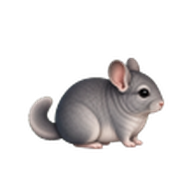
Animals Desktop
60種類の動物から選べます。
公開版 v2.0.0：60種類

動物をクリック
Animals Desktopについて
Ver2では7姿の歩行・待機モーションを更新しました。従来素材の53姿と合わせて60姿から選べます。表示数や1匹ごとのサイズを選び、歩き、待機、クリック反応を楽しめます。
v2.0.0 は、完成済みのアセットをまとめたVer2の最初のリリースです。Windows版では固定表示とランダム表示を組み合わせられ、1匹ごとのランダム対象を全体または種類別に選べます。全体ランダムも、うさぎやフェレットなどの種類で絞り込めます。
Windows版はトレイの Language メニューから表示言語を切り替えられます。Windows 10/11ではZIPを展開して AnimalsDesktop.exe を起動してください。
Mac版はApple Silicon版またはIntel版のZIPを展開し、AnimalsDesktop.app を起動してください。
その他のダウンロード
Mac版の選び方
どちらもmacOS 12 Monterey以降に対応しています。M1以降のApple製チップを搭載したMacはApple Silicon版、Intelプロセッサを搭載したMacはIntel版を選んでください。
ネットワーク無効版について
v2.0.0のWindows版は未署名のため、Smart App Control / SmartScreen などに警告またはブロックされる場合があります。ネットワーク無効版は、自動更新確認、トレイからの更新確認、更新ZIPのダウンロードを無効化したWindows 64-bit向け検証版であり、警告を回避するものではありません。詳しくは Smart App Control FAQ、 SmartScreen reputation、日本語の補足事例として GlobalSignのSmart App Control事例を参照してください。
登場する動物
公開版では、鳥、猫、犬、爬虫類、小動物を含む60種類から選べます。
先頭10種類を表示しています。
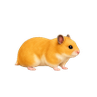
ハムスター
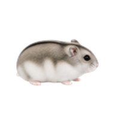
ジャンガリアンハムスター
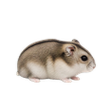
キャンベルハムスター
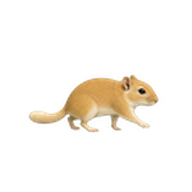
マカロニマウス
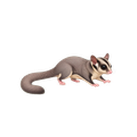
モモンガ
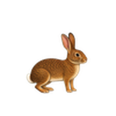
うさぎ
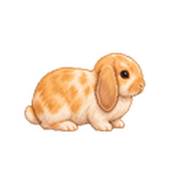
ホーランドロップ
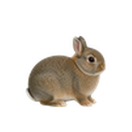
ネザーランドドワーフ
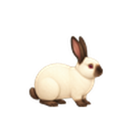
ヒマラヤンうさぎ
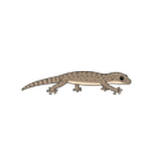
ヤモリ
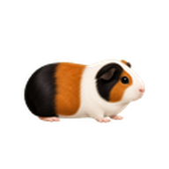
モルモット
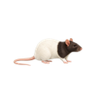
ファンシーラット
真のアルビノシマリス
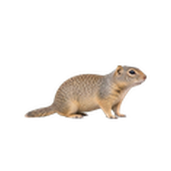
リチャードソンジリス
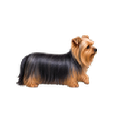
ヨークシャーテリア
v2.0.0は7姿の歩行・待機モーションを更新。残り53姿は従来素材を使用しています。
できること
お散歩とクリック反応
Windowsではタスクバー付近、MacではDock付近に表示します。クリックすると小さく反応し、作業中のクリック操作をできるだけ妨げません。
表示数・サイズ・位置
最大10匹までの表示数と1匹ごとのサイズを変更できます。Windowsでは画面、歩く範囲、縦位置を調整でき、Macでは表示先ディスプレイを選べます。
シンプルなWindows / Mac版
Windows版とMac版のv2.0.0を入手できます。現行プレビューでは木、種、餌などは表示せず、動物本体のしぐさを中心に楽しめます。
更新内容
公開中の主な変更点です。Windows版とMac版は現在 v2.0.0 です。
v2.0.0
Ver2を別リポジトリで公開。7姿の歩行・待機を更新し、足の動きと移動距離、サイズ、接地位置を調整しました。60姿の選択と既存設定を引き継ぎます。制作途中の候補は含めていません。
v0.2.16
セーブルパンダ、セーブル、アルビノのフェレット3種を追加しました。選べる動物は60種類です。Windows版とMac版の動物選択、歩行、待機、クリック反応に対応しています。
v0.2.15以前の更新内容
v0.2.15 / 2026-07-04
Windows版の動物設定で、固定表示とランダム表示を1匹ごとに組み合わせられるようにしました。ランダム枠は全動物または種類別に絞り込め、全体ランダムも種類指定に対応しました。選べる動物は57種類です。
v0.2.14 / 2026-07-03
動物選択の保存を安定したID方式へ切り替え、過去設定でハシビロコウが別の動物として復元されることがある問題を修正しました。Windows版とMac版の動物選択メニューを種類別に整理しています。選べる動物は57種類のままです。
v0.2.13 / 2026-07-03
Windows版の動物選択の保存を安定したID方式へ切り替え、名簿追加で選択がずれる問題を修正しました。選べる動物は57種類のままです。
v0.2.12 / 2026-07-03
白黒長毛ハムスター2と、作り直した赤目・無模様の真のアルビノシマリスを追加しました。選べる動物は57種類です。
v0.2.11 / 2026-07-02
アルビノシマリス枠を新しい素材の確認まで公開選択肢から外しました。チンチラのベージュ/エボニーとブルーフーディッドのファンシーラット色調補正は維持し、選べる動物は55種類です。
v0.2.10 / 2026-07-02
チンチラのベージュ/エボニーを追加し、黒目の白いシマリス枠を赤目で無模様の真のアルビノシマリスへ差し替え、ブルーフーディッドのファンシーラットの色調をグレー寄りに整えました。選べる動物は56種類です。
v0.2.9 / 2026-07-02
候補の動物12種類を追加し、選べる動物を54種類に増やしました。真のアルビノシマリスは白背景での見え方修正まで一時的に外しています。
v0.2.8 / 2026-07-01
ライオンラビットと、動きが控えめなハシビロコウを追加し、選べる動物を42種類に増やしました。真のアルビノシマリスは白背景での見え方を直すまで一時的に外しています。
v0.2.7 / 2026-07-01
真のアルビノシマリスを白背景での視認性修正まで一時的に外し、公開runtimeを40種類に整理しました。Windows版とMac版の動物選択、サイズ変更、表示数、言語、表示先ディスプレイ設定は継続しています。
v0.2.6 / 2026-06-30
青緑マメルリハ、真のアルビノシマリス、ミニチュアシュナウザー、オオサンショウウオ、ハクセキレイ、キジ白猫を追加し、選べる動物を41種類に増やしました。既存のインコ、クアッカ、ロボロフスキー、猫・犬アセットも見直し、ヒョウモントカゲモドキのターン中のサイズを補正しています。Windowsのmixed-DPIマルチモニター表示も修正しました。
v0.2.5 / 2026-06-29
Windowsのマルチモニター表示で、4KとフルHDなど解像度やDPIスケールが異なる環境でも、動物が小さくなったり位置がずれたりしにくいように修正しました。動物数は35種類のままです。
v0.2.4 / 2026-06-28
19種類の動物を追加し、選べる動物を35種類に増やしました。シマリス、ヒョウモントカゲモドキ、水色イエアメガエル、鳥類、猫種、犬種、ロボロフスキー、ロシアンスモーク白のモルモット、クアッカワラビーを追加しています。
v0.2.3 / 2026-06-28
Windows版の設定UIで、名前変更ダイアログと設定フッターのボタンが見切れないようにした修正版です。動物数は16種類のままです。
v0.2.2 / 2026-06-27
Mac版にWindows版と同じ16種類の動物選択、1匹ごとのサイズ変更、表示数、言語切り替え、表示先ディスプレイ設定を反映しました。Windows版にはトレイの Language メニューを追加しました。PagesもJP/EN切り替えと動物グリッド表示に更新しています。
v0.2.1 / 2026-06-27
Windows版のセキュリティと信頼性を整え、Mac版のZIPも v0.2.1 として公開した更新です。Windows用のバージョン情報、アプリアイコン、更新処理、SHA256検証情報を追加しました。動物数は16種類のままです。
v0.1.5 / 2026-06-21
16種類の小動物を先行公開したプレビュー版です。Windows版とMac版で、歩き、待機、クリック反応、表示数変更を試せます。
v2.0.0の詳細
v2.0.0 は、完成済みアセットを収録したWindows / Mac向けVer2です。チンチラ3姿、ゴールデンハムスター、マカロニマウス、シマリス、セーブルフェレットの歩行・待機を更新し、移動距離に歩行アニメーションを合わせました。ゴールデンハムスターには新しい入力反応も収録。残り53姿は従来素材を使用しています。Windows版では固定枠とランダム枠の組み合わせ、1匹ごとの種類別ランダム、全体ランダムの種類絞り込みを設定できます。動物選択、サイズ変更、表示数、言語、表示先ディスプレイ設定も利用できます。木、種、餌などの追加アイテムはこの版では表示しません。
About Animals Desktop
Animals Desktop is a small desktop pet app for Windows and macOS. It includes sixty animals, including Sable Panda, Sable, and Albino ferrets, that walk near the Windows taskbar or above the Mac Dock. You can change the visible count and each animal's size, then enjoy walking, idle motion, and click reactions.
v2.0.0 is the first Ver2 release, with seven refreshed walking and idle animations and 53 animals using existing sprites. On Windows, fixed animals and random slots can be mixed per pet. Random slots can target all animals or one animal type, and global random mode can also be filtered by type. The tray Language menu changes the Windows app language. On Windows 10/11, extract the ZIP and run AnimalsDesktop.exe. On Mac, extract the Apple Silicon or Intel ZIP and run AnimalsDesktop.app.
Other downloads
Choose a Mac build
Both ZIPs support macOS 12 Monterey or later. Choose Apple Silicon for a Mac with an M1 or later Apple chip, and choose Intel for an Intel-based Mac.
About the no-network edition
The v2.0.0 Windows packages are unsigned, so Smart App Control, SmartScreen, or security software may warn about or block them. The Windows 64-bit no-network edition disables automatic startup update checks, tray update checks, and update ZIP downloads for security review; it does not bypass these warnings. See the Smart App Control FAQ, SmartScreen reputation, and the Japanese supplemental GlobalSign Smart App Control case study.
Available animals
The public catalog includes sixty animals: birds, cats, dogs, reptiles, amphibians, rabbits, and small mammals.
v2.0.0 updates walking and idle motion for seven animals; the other 53 keep their existing sprites.
Features
Walking and click reactions
Animals appear near the Windows taskbar or above the Mac Dock. Click an animal for a small reaction while keeping normal work clicks out of the way.
Count, size, and position
Show up to 10 animals and adjust each animal's size. On Windows, choose the display, walking range, and vertical placement. On Mac, choose the target display.
Simple Windows and Mac preview
Windows v2.0.0 and Mac v2.0.0 are available here. This preview focuses on animal motion and does not show trees, seeds, food, or other props.
Version Changes
Windows and Mac are currently on v2.0.0.
v2.0.0
Ver2 launches in a separate repository with seven refreshed walking and idle animations, distance-driven gait, scale and ground alignment. All 60 choices and existing settings remain available. Unfinished candidates are excluded.
v0.2.16
Adds Sable Panda, Sable, and Albino ferrets. The selectable roster now contains sixty animals, with animal selection, walking, idle motion, and click reactions on Windows and Mac.
Changes before v0.2.16
About v2.0.0
v2.0.0 brings completed motion assets to Windows and Mac: three chinchillas, golden hamster, tan macaroni mouse, striped chipmunk and sable ferret. Their walking animation follows distance traveled. The golden hamster also has a new input reaction. The other 53 animals retain their existing sprites. On Windows, fixed animals and random slots can be mixed per pet, per-slot random can target an animal type, and global random mode can be filtered by type. Other controls cover animal selection, size changes, visible count, language, and display settings. Extra props such as trees, seeds, and food are not shown in this version.